BUILD / DESIGN REFERENCE
The character codex. Artwork specifications are separated from public character stories. Every slot remains a replaceable placeholder.
Concept blueprint A seasoned arcane engineer wearing practical dark robes, reinforced leather and metallic details. The workshop contains mechanical instruments, manuscripts, tools and experimental creations. The atmosphere is dark arcane fantasy, with restrained bronze, antique gold and ember accents.
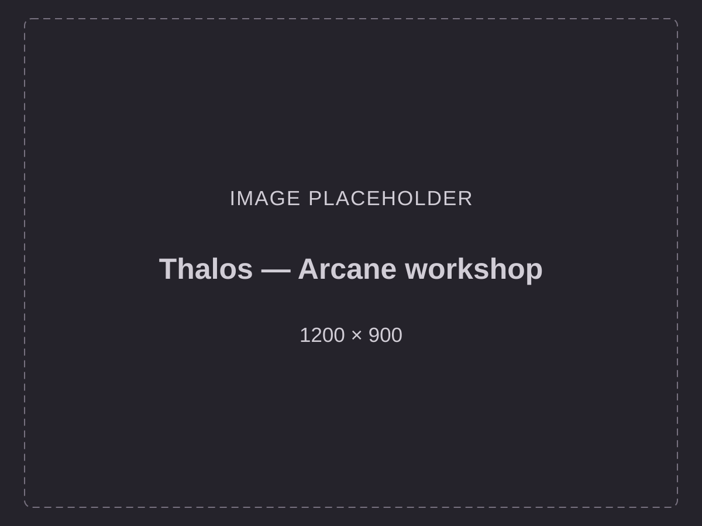
Thalos — Arcane workshop · visual asset Obsidian #151419
Arcane #342A40
Bronze #76513B
Gold #C29B5F
Ember #F2C586
Portrait: 900 × 1200. Workspace: 1200 × 900.
A practical runesmith in dark ink-stained workwear, surrounded by etched plates, orderly code-like inscriptions and articulated mechanisms. Avoid literal unreadable code as decoration.
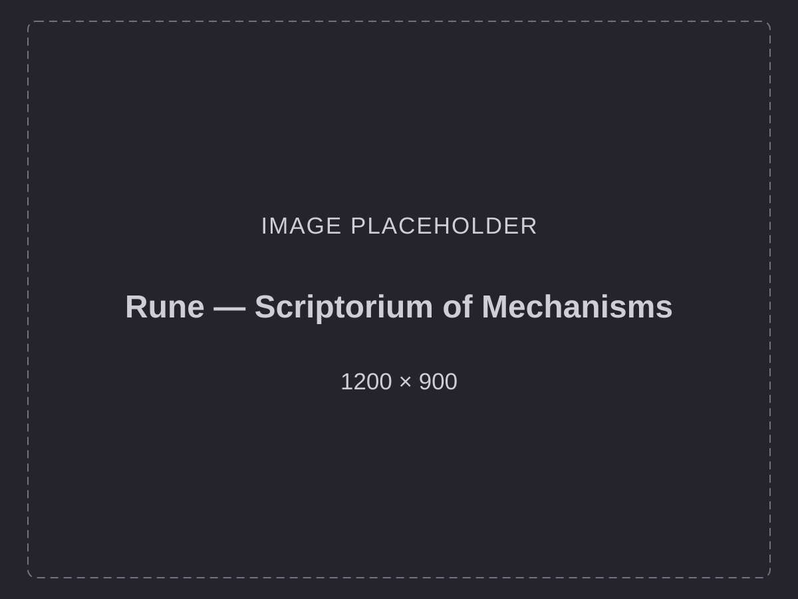
Rune — Scriptorium of Mechanisms · visual asset Obsidian #151622
Domain #354258
Accent #718DA4
Metal #C2B58D
Light #E6D9BB
Portrait: 900 × 1200. Workspace: 1200 × 900.
A meticulous arcane architect with measuring compass, architectural drawings and suspended geometric models in a vaulted drafting chamber.
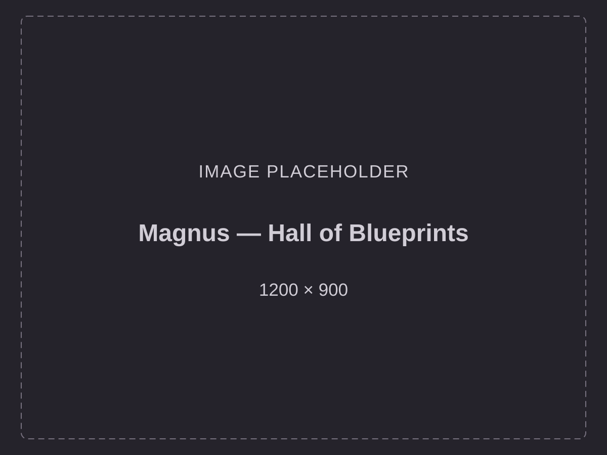
Magnus — Hall of Blueprints · visual asset Obsidian #171720
Domain #343549
Accent #6A738F
Metal #B9A77E
Light #E2D8C2
Portrait: 900 × 1200. Workspace: 1200 × 900.
A composed arcane strategist surrounded by resonance rings, audience maps and illuminated communication scrolls; refined violet textiles and warm brass.
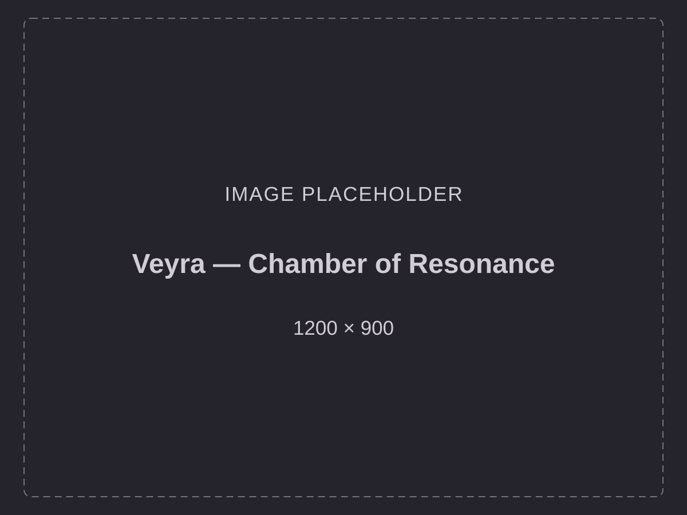
Veyra — Chamber of Resonance · visual asset Obsidian #191020
Domain #4B285B
Accent #A06DB0
Metal #C8A36E
Light #F0D9DE
Portrait: 900 × 1200. Workspace: 1200 × 900.
An alert messenger in layered midnight-violet garments, surrounded by delicate threads connecting illuminated message panels and listening alcoves.
Nyra — Gallery of Echoes · visual asset Obsidian #171321
Domain #423250
Accent #907DAE
Metal #BD9B84
Light #DED5ED
Portrait: 900 × 1200. Workspace: 1200 × 900.
An arcane storyteller with luminous quill, layered parchment and threads of ink woven into a restrained dark fantasy library.
Liora — Storyloom Archive · visual asset Obsidian #1B141C
Domain #51334B
Accent #A77486
Metal #D0AD73
Light #EEDDC9
Portrait: 900 × 1200. Workspace: 1200 × 900.
A poised illusionist in an atelier of restrained violet prisms, color studies, translucent planes and elegant visual compositions.
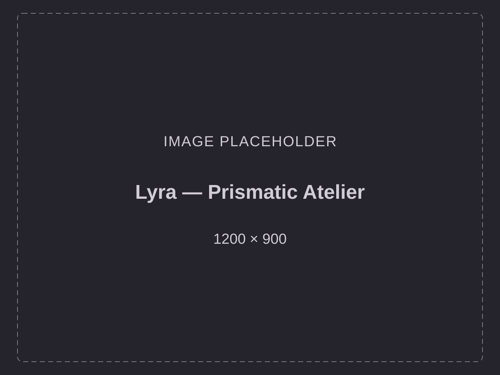
Lyra — Prismatic Atelier · visual asset Obsidian #191321
Domain #3F2C59
Accent #966FC7
Metal #D7B98D
Light #F0E5FA
Portrait: 900 × 1200. Workspace: 1200 × 900.
An arcane sculptor with faceted models, measuring instruments, carved geometric objects and a practical fabrication bench.
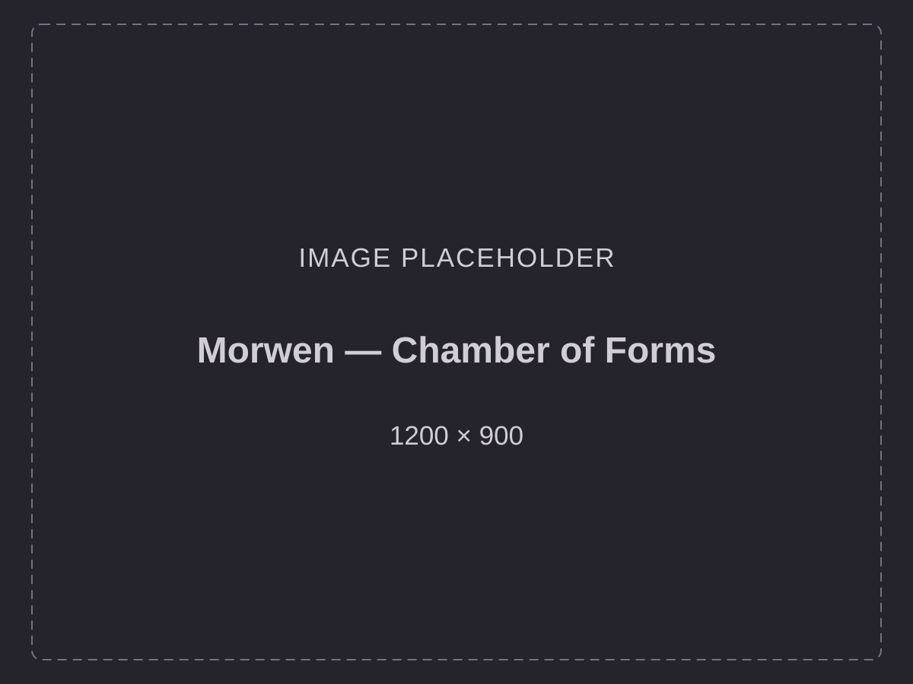
Morwen — Chamber of Forms · visual asset Obsidian #18191E
Domain #3A3949
Accent #858E9C
Metal #B79976
Light #E6D7C2
Portrait: 900 × 1200. Workspace: 1200 × 900.
A media conjurer with a dark theater, floating rectangular frames, optical lanterns and carefully arranged editing instruments.
Kairen — The Lantern Theater · visual asset Obsidian #151321
Domain #392E55
Accent #7E72B8
Metal #CAA06E
Light #E3D9F6
Portrait: 900 × 1200. Workspace: 1200 × 900.
A quiet oracle at an astronomical observatory with open manuscripts, a luminous eye-like lens and star maps used as metaphors for inquiry.
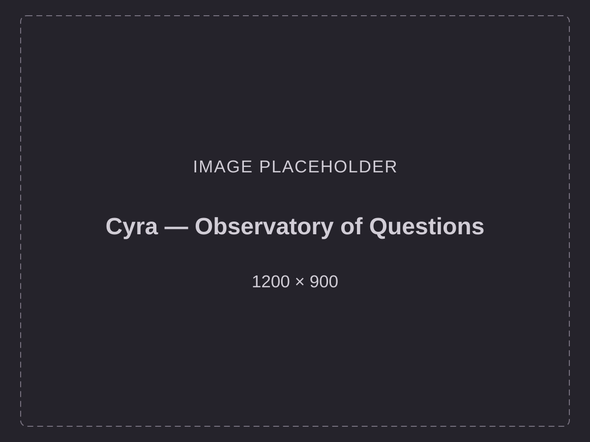
Cyra — Observatory of Questions · visual asset Obsidian #111823
Domain #283C55
Accent #688DB0
Metal #B5A6CB
Light #D9E5F5
Portrait: 900 × 1200. Workspace: 1200 × 900.
A precise seer surrounded by measured constellations, calibrated lenses and clean geometric data diagrams in a dark blue observatory.
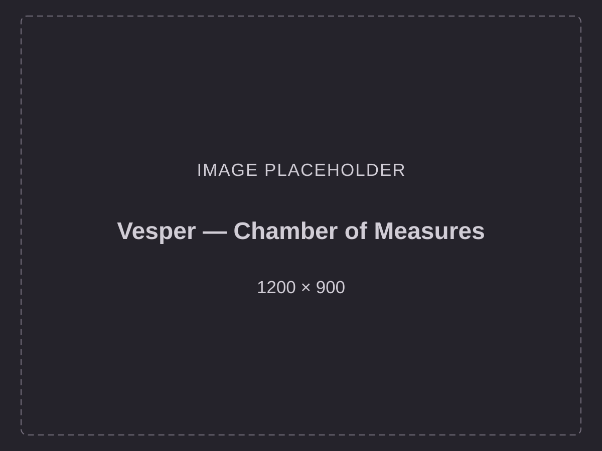
Vesper — Chamber of Measures · visual asset Obsidian #141821
Domain #263D4C
Accent #7198AC
Metal #ACB6D1
Light #E2EBF3
Portrait: 900 × 1200. Workspace: 1200 × 900.
A frontier pathfinder in practical dark traveling attire, with windrose, maps, directional instruments and distant passages.
Zephyr — Frontier Map Room · visual asset Obsidian #161B23
Domain #304553
Accent #719A98
Metal #BFA87B
Light #E1DDD0
Portrait: 900 × 1200. Workspace: 1200 × 900.
A pragmatic alchemist with labeled vessels, prototype objects, experiment notes and restrained green-violet glow in a practical laboratory.
Mira — Laboratory of Transformations · visual asset Obsidian #16211E
Domain #2E4941
Accent #729F87
Metal #C2A775
Light #E2E6CE
Portrait: 900 × 1200. Workspace: 1200 × 900.
A grounded forgemaster in protective work attire among furnaces, gauges, material samples and carefully organized production stations.
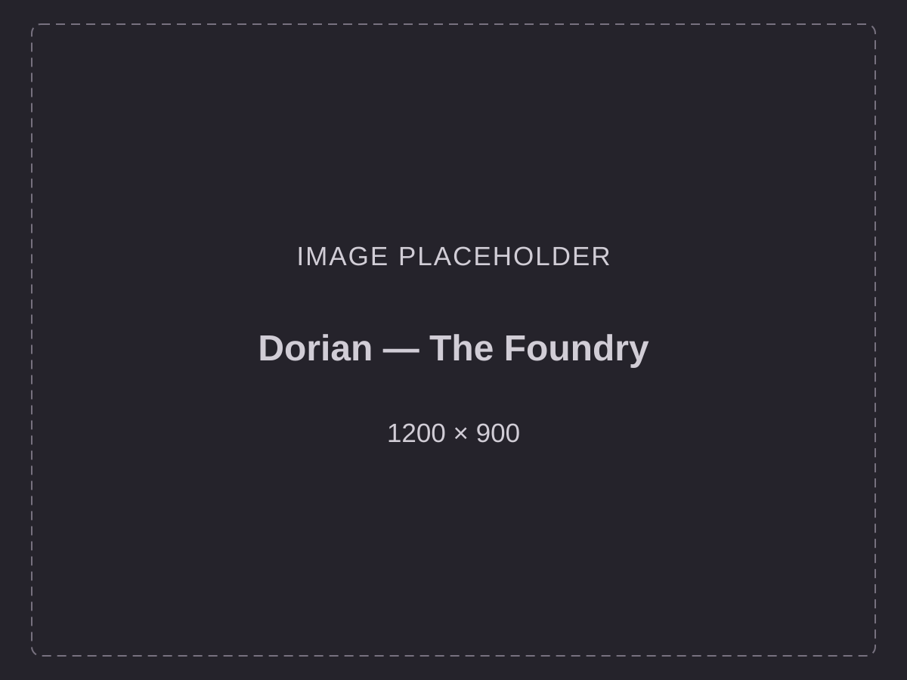
Dorian — The Foundry · visual asset Obsidian #1B1715
Domain #4A3329
Accent #98684B
Metal #D09B5F
Light #F0CCA0
Portrait: 900 × 1200. Workspace: 1200 × 900.
An elegant but practical arcane merchant with trade ledgers, balanced tokens and a dark marketplace map rather than extravagant treasure.
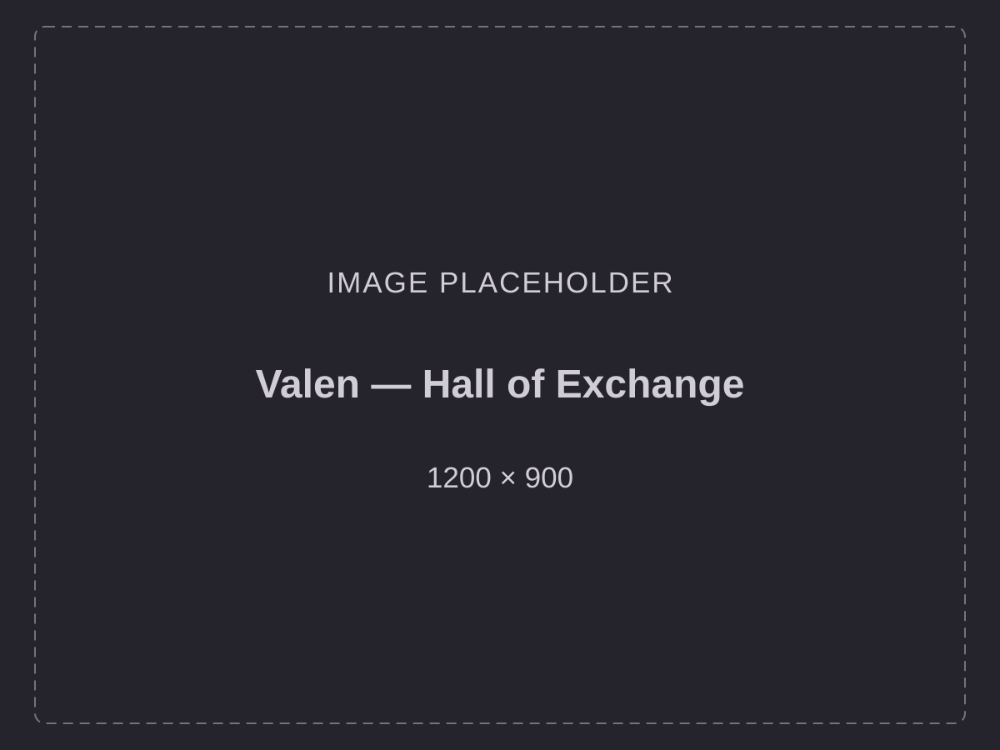
Valen — Hall of Exchange · visual asset Obsidian #1C1818
Domain #48372F
Accent #A08061
Metal #D1AF77
Light #E8D7BC
Portrait: 900 × 1200. Workspace: 1200 × 900.
A disciplined treasurer with balanced scales, orderly ledgers and restrained antique gold in a quiet accounting vault.
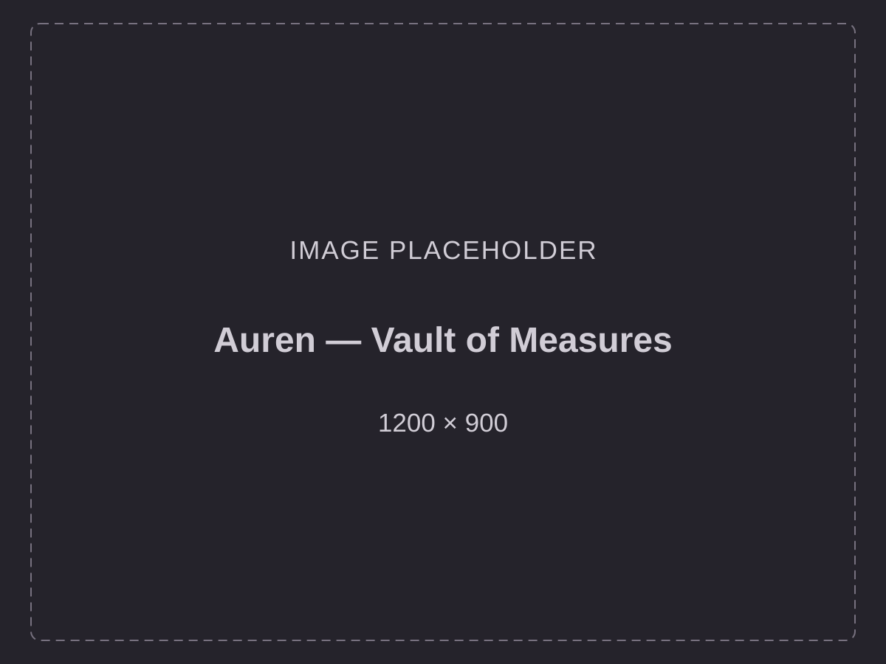
Auren — Vault of Measures · visual asset Obsidian #1B1A17
Domain #49422C
Accent #927B4C
Metal #D5B66F
Light #EFE2BD
Portrait: 900 × 1200. Workspace: 1200 × 900.
A welcoming arcane envoy in warm muted garments with sealed correspondence, an open doorway and a calm listening chamber.
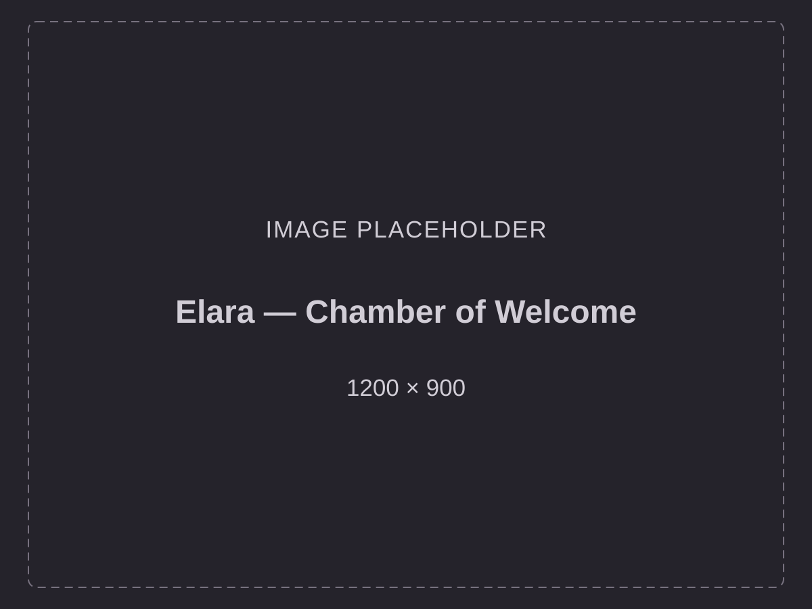
Elara — Chamber of Welcome · visual asset Obsidian #20171D
Domain #543744
Accent #A27F83
Metal #CBB18B
Light #F0DDD3
Portrait: 900 × 1200. Workspace: 1200 × 900.
A restrained arcane guardian in dark protective attire with geometric wardstones, gate mechanisms and a carefully mapped boundary diagram.
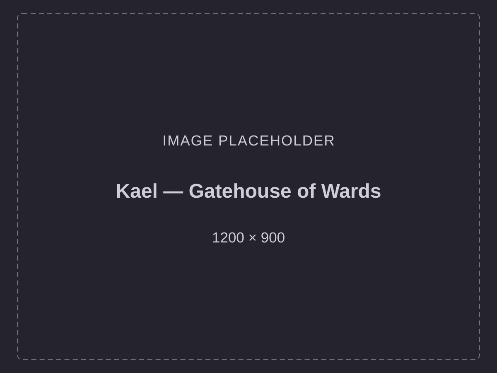
Kael — Gatehouse of Wards · visual asset Obsidian #141922
Domain #303B4D
Accent #6F8196
Metal #A9B1BB
Light #DADDE4
Portrait: 900 × 1200. Workspace: 1200 × 900.
An independent sentinel with a stamped verification seal, test instruments and orderly evidence boards in a quiet hall.
Aldric — Hall of Trials · visual asset Obsidian #171C24
Domain #354353
Accent #8394A8
Metal #B4A17D
Light #E3E5E8
Portrait: 900 × 1200. Workspace: 1200 × 900.
A chronomancer with a restrained mechanical dial, sequencing charts and interconnected time markers in a dark observatory-like planning room.
Eryx — Chamber of Hours · visual asset Obsidian #151C25
Domain #304A5B
Accent #749BAC
Metal #B8B38B
Light #DCE6E8
Portrait: 900 × 1200. Workspace: 1200 × 900.
A workflow weaver at a mechanical loom of interlocking threads and structured runic circuits, with teal-violet highlights.
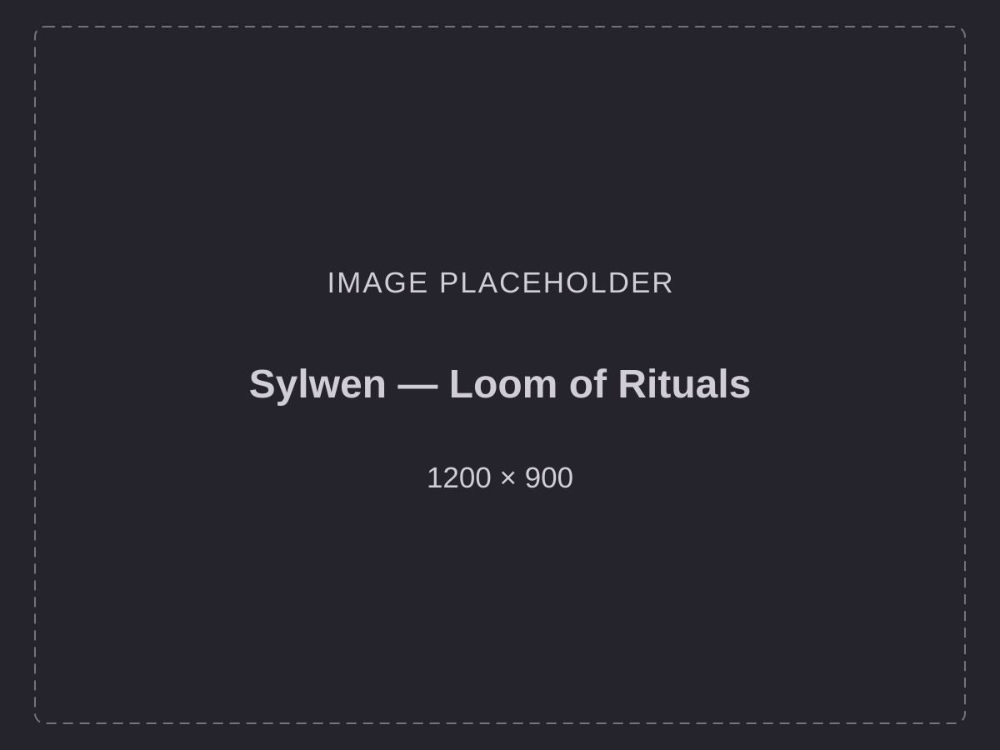
Sylwen — Loom of Rituals · visual asset Obsidian #142026
Domain #2F4850
Accent #70A39F
Metal #A2BDB1
Light #DFE9DF
Portrait: 900 × 1200. Workspace: 1200 × 900.
A knowledge cartographer with layered maps, indexed cairn landmarks and interconnected archival shelves, restrained sage and violet tones.
Orin — Atlas of Landmarks · visual asset Obsidian #172019
Domain #344B40
Accent #829987
Metal #B5A48A
Light #E0E3D4
Portrait: 900 × 1200. Workspace: 1200 × 900.
A chronicler at a dark archive desk, with bound volumes, precise ink markings and a luminous seal on organized decision records.
Vaelis — Archive of Decisions · visual asset Obsidian #1C1920
Domain #44394D
Accent #8D819E
Metal #C3AD83
Light #E9E1D5
Portrait: 900 × 1200. Workspace: 1200 × 900.
A thoughtful sage in a quiet council library with multiple open manuscripts, a modest guiding lantern and overlapping maps of perspectives.
Eldrin — Council Library · visual asset Obsidian #1A1722
Domain #40354F
Accent #8E80A5
Metal #C9AE7D
Light #E9E0EC
Portrait: 900 × 1200. Workspace: 1200 × 900.